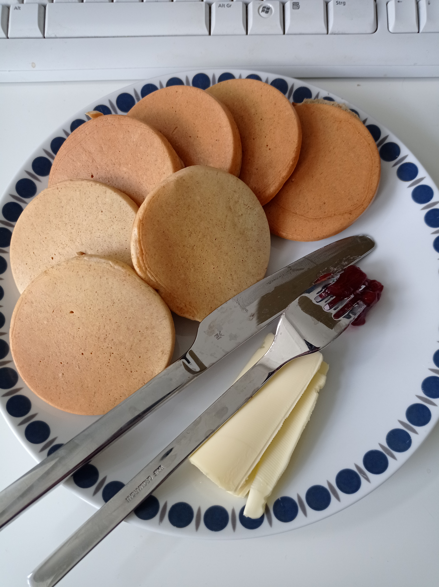

pancakes

Description
Delicious stuff, done in 5 minutes
- 1 egg
- pinch of salt
- 1 tablespoon wholegrain spelt flour
- 1/2 tablespoon cornstarch
- 1 teaspoon baking powder
- 1-3 tablespoons milk
- heat the pan on medium to high heat
- whisk eg and salt in a bowl until light in color
- add flour, starch and powder
- mix and add milk until smooth and running slowly when pouring
- bake for 2 minutes in the pan, then flip